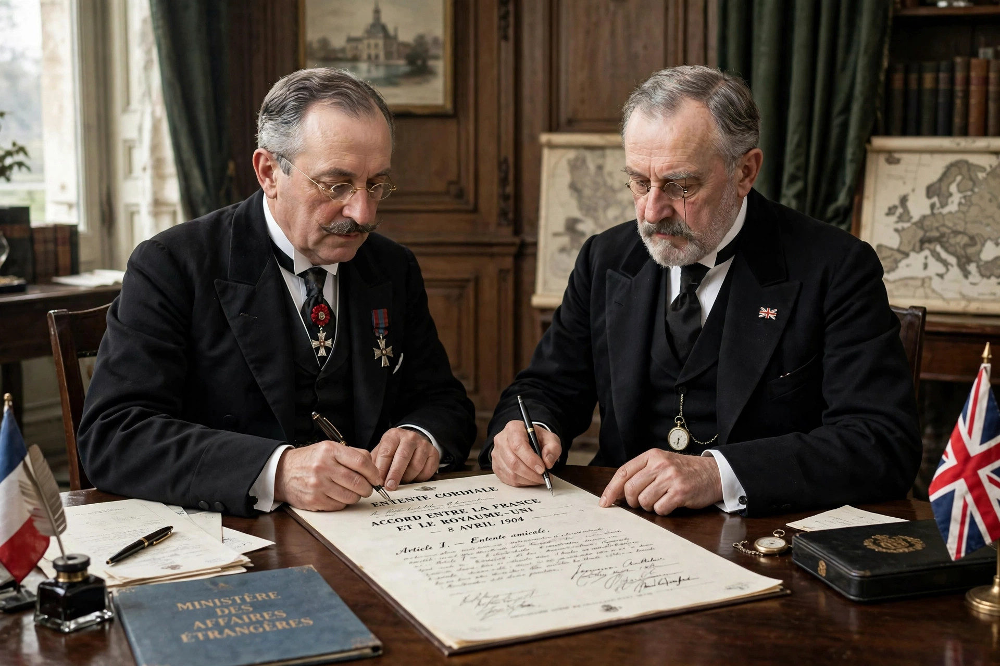

From Wikipedia, the free encyclopedia

An entente is a type of treaty or military alliance in which the signatories promise to consult each other or to cooperate in the event of a crisis or specified circumstances. Unlike a formal defence alliance, an entente does not necessarily entail a binding commitment to fight alongside one another, although ententes may develop into such obligations over time. The word derives from the French entente, meaning "understanding" or "agreement."
The best-known example is the Entente Cordiale of 1904, a series of agreements between the United Kingdom and France that settled longstanding colonial disputes — over Egypt, Morocco, Nigeria, Siam, and the New Hebrides — and ended centuries of intermittent rivalry. The Anglo-Russian Convention of 1907 extended a similar understanding to Russia, dividing Persia into spheres of influence and settling disputes over Afghanistan and Tibet. Together with the Franco-Russian Alliance of 1892, these agreements formed the Triple Entente, one of the two great blocs that confronted each other in the First World War, opposed by the Triple Alliance of Germany, Austria-Hungary, and Italy.
Other notable ententes include the Entente of 1834 (the Quadruple Alliance of Britain, France, Spain, and Portugal), the Balkan Entente of 1934, and the Little Entente of Czechoslovakia, Romania, and Yugoslavia formed after the First World War to contain Hungarian revisionism.
Diplomats have historically used the entente as a flexible instrument: it signals alignment and deters adversaries without the rigid automatic commitments of an alliance, preserving freedom of action while still coordinating policy. That same ambiguity can, however, mislead both allies and opponents about what the parties will actually do in a crisis.